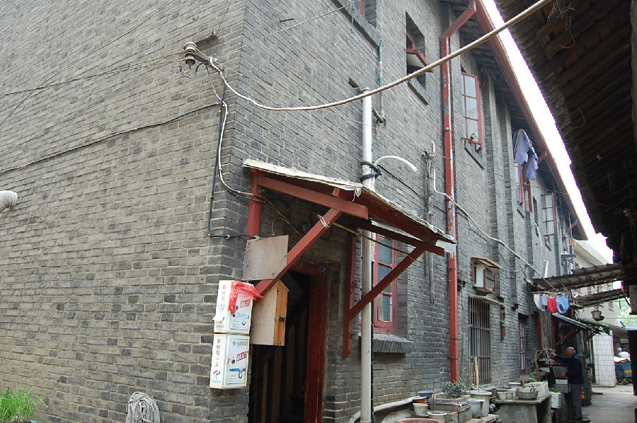

嘉兴市文物保护网 · 市级文物保护点 · 2020-11-09 · 原文

铁路公房位于嘉兴市南湖区解放街道虹桥社区宣公弄14号，是抗日战争时期，日军建造的火车站配套建筑，建国后作为公租房，由房管所管理。公房占地面积182.8平方米，坐北朝南，砖木结构，系二层六开间楼房，通面阔20.6米，通进深8.9米。屋顶为悬山顶，墙体用青砖砌筑，四面开有方形门窗。铁路公房是日军侵华的见证，对于研究嘉兴抗战史具有较高的历史价值。2010年公布为嘉兴市文物保护点。